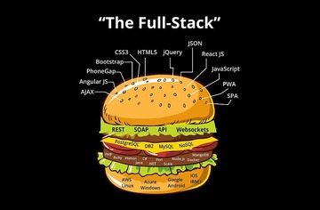
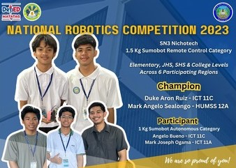

- shsinsannicolas3.weebly.com
TVL - ICT Strand
Are you passionate about technology and curious to dive into the digital world? The ICT strands at San Nicolas III SHS offer two thrilling paths that let you explore, create, and innovate:
Select strand>>

Computer Programming: The Language of Innovation
In the Programming strand, students learn the languages that power the digital world. Whether it’s developing apps, websites, or games, you’ll get hands-on experience in writing code and solving real-world problems.

Computer System Servicing: Keeping the Digital World Running
The CSS strand is perfect for those who love working with hardware and want to understand how computers and networks work.
Be an ICT Nicholasian!
As creators, innovators, and problem-solvers, you hold the power to shape the future. Society thrives on technology, and the next breakthrough is waiting for you to make it happen. Let’s rise to the challenge, because the world of tomorrow depends on what we do today!
Learn MoreIn this strand
Your journey can lead to:
Game Developer
A game developer creates and programs video games by designing gameplay mechanics, characters, and immersive environments.
Full Stack Developer
A full-stack developer builds and manages both the front-end and back-end of web applications, ensuring they function seamlessly for users.
App Creator
An app creator designs and develops mobile or desktop applications, focusing on user experience and functionality for everyday tasks or entertainment.
Successful Innovation of ICT Industry
This section provides a simple overview of artificial intelligence, highlighting its role in technology. It also covers Facebook as a popular social media platform for connecting people and discusses the importance of cybersecurity in protecting data and systems from threats.
See moreArtificial Intelligence
AI is the simulation of human intelligence in machines for tasks like learning and problem-solving.
Advisory.jpg)
Cybersecurity
Cybersecurity protects systems and data from unauthorized access and threats.
AdvisoryProgramming student ako pero hindi ibig sabihin non na kaya kong ayusin washing machine nyo.
Ervie Benliro - Grade 12 ICT - C
Kung nag hahanap ka ng gwapo, nasa comlab 4 lang ang mga to.
Raycher Santos - Grade 12 ICT - C
Coding is a great passion, pero ewan ko rin bakit ako nandito.
Cherryanne Duclayan - Grade 12 ICT - C
Becoming a ICT is not easy but having a good classmate is lucky.
Jhanerix Apatino - Grade 12 ICT - C
Don’t give up on programming, keep trying until you win.
Athiya Prenciona - Grade 12 ICT - C
Ang ICT ay pag aralan, Si sir Ruie ay Alagaan.
Marvelous Gabriel Asirot - Grade 12 ICT - C
Kahit nagco-code ako, ikaw padin nasa isip ko.
Paul Justine A. Cañotal - Grade 12 ICT - C
Learning programming is not easy, but I'm here in San Nicolas III to make it easy.
Arcilla Adrian - Grade 12 ICT - C
Nag ICT ako kase wala na akong ibang gusto, ikaw lang talaga baby ko.
Carlos Jielo - Grade 12 ICT - C
Ang pag aaral sa ICT ay pag butihin dahil ang mga bully ay hindi na ligtas sa akin.
Aerljoshua Sardeña - Grade 12 ICT - C
Tarubfs
Floyd Venedict Quimay - Grade 12 ICT - C
Use sharp mind to define problem of technology.
Deniel Gaboc - Grade 12 ICT - C
Our Recent News
